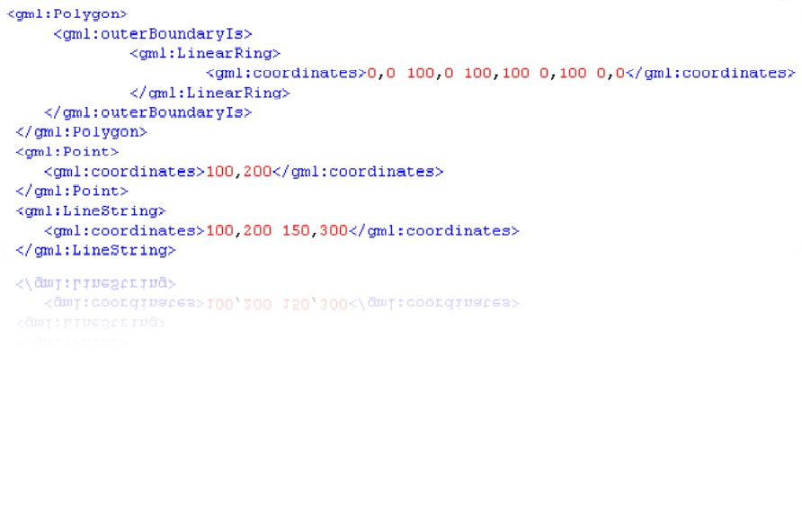
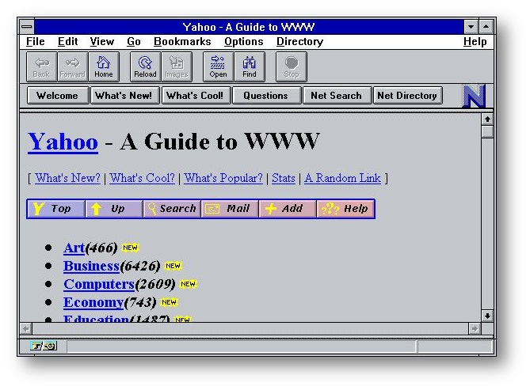
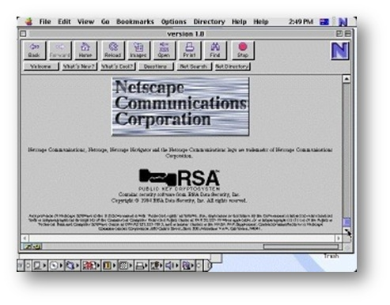
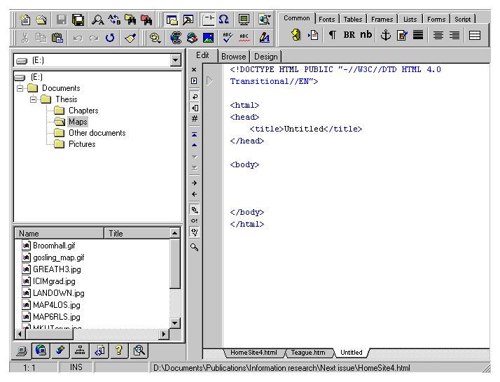
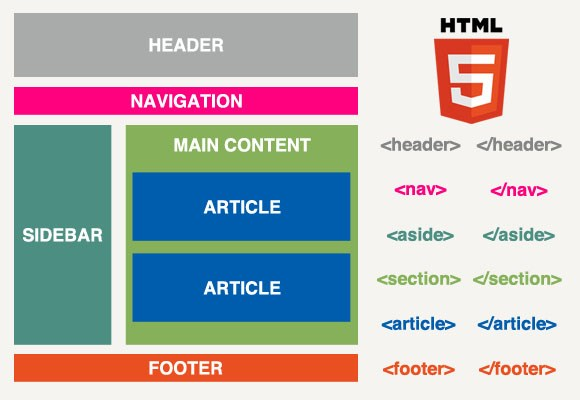

1960s General Markup Language (GML)

1993 - HTML version 1.
The first HTML documents contained about 40 tags. These were text pages only.
1995 - HTML versions 2.0 and 3.0
December 17, 1996 - CSS
So, CSS system:
December 18, 1997 - HTML versions 4.0
HTML versions 5.0
